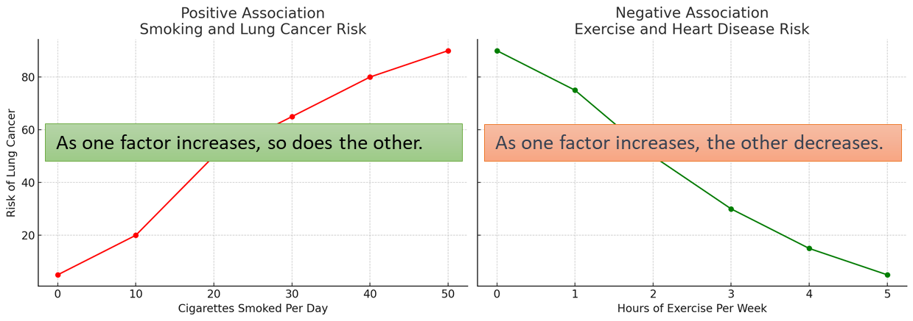
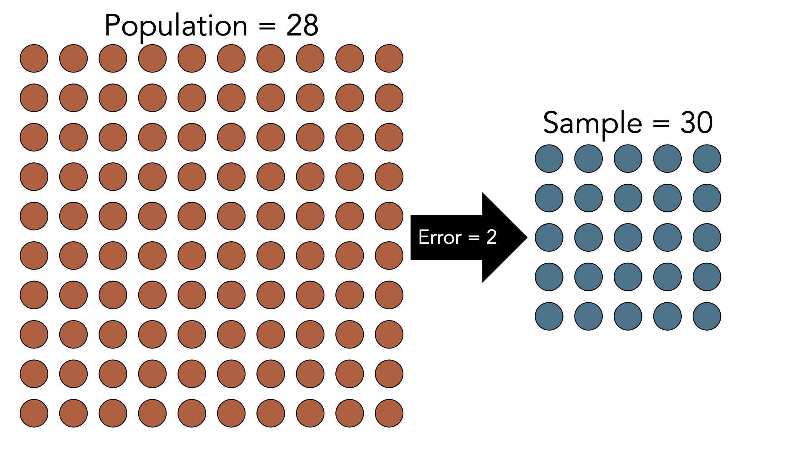
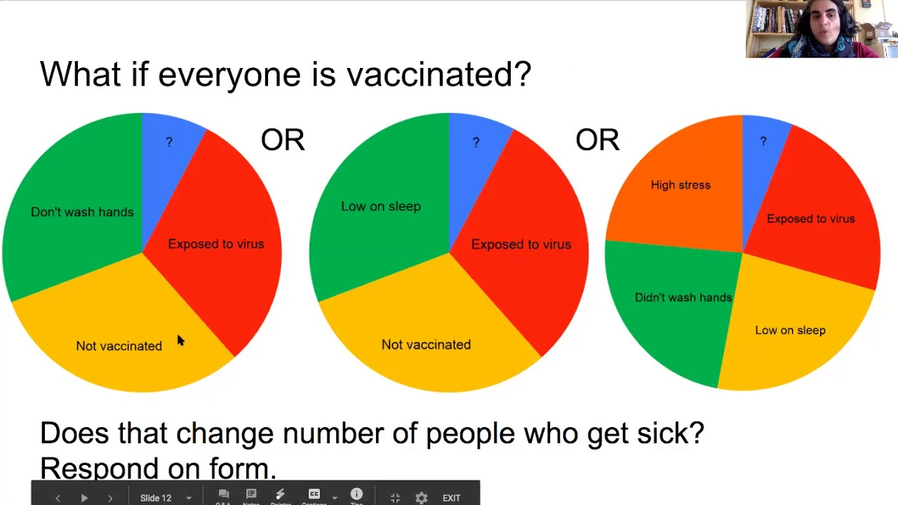
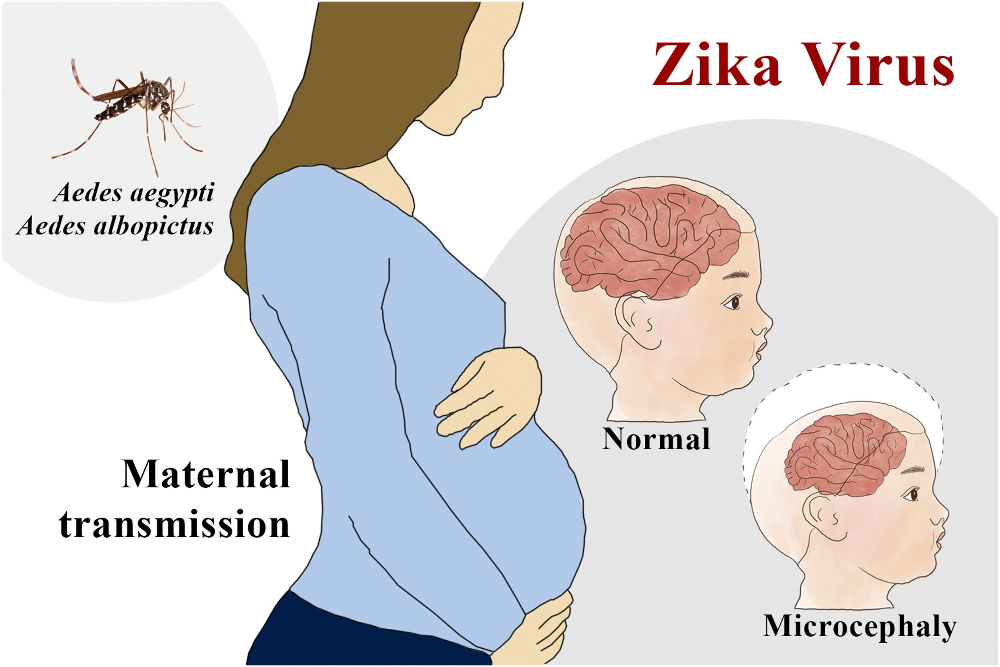

Association and Causality
APHS 20203 • Epidemiology & Biostatistics
Epidemiological Study: Fundamental Question
After identifying patterns (Person–Place–Time), we ask:
Are exposure and outcome linked?
Is the observed association valid or misleading?
Could chance, bias, or confounding explain the finding?
Does the evidence support a causal interpretation?
Disease Causality: Concepts Over Time
Causal explanations evolve with available evidence, tools, and methods.
Supernatural explanations: Disease attributed to fate, spirits, or moral forces
Environmental (Miasma) theories: Illness linked to air, water, climate, and surroundings
Germ theory: Specific biological agents identified as causes of many infectious diseases
Risk-factor & multicausal models: Most diseases arise from multiple interacting factors, not a single cause
Modern epidemiology: Causal inference integrates biology, behavior, environment, and social context over time
What Do Epidemiologists Report First?
When studying health in populations, epidemiologists usually start by reporting:
A. Clear cause-and-effect relationships
B. Patterns and correlations
C. Biological mechanisms
D. Random events with no structure
Association
Association: The distribution of an outcome differs across levels of an exposure.
- For example, the outcome may be more common in one group than another.
Knowing something about X helps us predict something about Y.
Types: Positive association and negative association.
An association alone does not tell us why the groups differ.
Types of Association
Positive Association
Negative Association

Causality
Causality: A relationship where a change in one factor directly produces a change in an outcome.
Key distinctions
Causality implies association
Association does not imply causality
Why causality is harder to establish
Multiple contributing factors
Role of chance, bias, and confounding
Ethical and practical limits on experimentation
The Search for Causality
When an association is observed, epidemiologists may ask:
Is the association causal?
Could chance, bias, or confounding explain it?Is the association consistent with what we (think we) know about how the world works?
Across time, place, populations, and biology?Does the evidence support a causal interpretation?
Or are alternative explanations more plausible?
Key idea: Causality is not proven by a single study, but evaluated through accumulated evidence.
Bias
Bias: Systematic error in an estimate. The gap between what we measured and what we intended to measure.
Bias can arise from who enters a study, how we measure variables, or how we estimate a causal effect.
- Example: We want to estimate average physical activity among all Texas adults, so we measure physical activity patterns at local gyms.
- Key idea: A larger sample does not generally eliminate bias.
Confounding
Confounding: The effects of other factors become mixed into our estimate of an exposure’s causal effect. Or giving credit to the wrong variable.
Example: Ice cream sales and drownings both increase during hot weather.
- Hot weather influences both ice cream sales and drowning risk.
Question: Would reducing ice cream sales reduce drownings?
Key idea: The association can be real and useful for prediction without representing a causal effect of ice cream sales.
Exercise: Sunscreen Use and Skin Cancer
Observed association: Higher rates of skin cancer are associated with increased sunscreen use.
Question: What might confound the relationship between sunscreen use and skin cancer?
Think about:
Who is more likely to use sunscreen?
What other exposure might be related to both sunscreen use and skin cancer?
Exercise: Which Is a Spurious Association?
Which scenario shows a spurious association?
A. As outside temperature drops, more people wear hats.
B. As vaccination rates increase, the targeted disease decreases.
C. Fires attended by more firefighters tend to cause more property damage.
D. People who exercise regularly have lower rates of heart disease.
Population, Sample & Uncertainty
Example: We want to understand the health of adults living in Texas.
| Group | Who belongs to it? | In our example |
|---|---|---|
| Target population | People we want findings to apply to | All Texas adults |
| Source population | People from whom we select participants | Adult patients at several Texas clinics |
| Study sample | People whose data we analyze | 500 participating patients |
- Chance: Would another random sample from the same source give a different estimate?
- Applicability: How well do these findings apply to all Texas adults?
Role of Chance in Association/Causality
Sampling variability: Estimates differ from sample to sample, even when we sample randomly from the same population.

Hypothetical BMI example
- Population mean: 28
- One random sample: 30
- Another random sample might have a mean of 26.
Question: Must a difference between an estimate and the truth mean someone made a mistake?
Controlling for Chance in Epidemiologic Studies
Larger samples generally reduce sampling variability.
Systematic bias is a different problem. A larger sample does not typically correct biased recruitment, measurement, or confounding.
Precision and causality are different questions. We can estimate an association precisely and still be uncertain whether it is causal.
Key idea: More data can improve precision, but causal interpretation still requires careful judgment.
Types of Causality
Deterministic causality
A cause leads to an outcome with certainty
If the cause occurs, the outcome follows
Everyday example: Pressing a light switch → the light turns on
Probabilistic causality
A cause changes the chance of an outcome
The outcome does not always occur
Everyday example: Studying more → higher chance of doing well on an exam
Epidemiology focuses mostly on probabilistic causality.
Deterministic Causality in Epidemiology (Rare)
Defining feature: Exposure leads to disease with near certainty
Why it’s unusual
Most diseases involve multiple interacting causes
Individual susceptibility and context matter
Epidemiologic example
- Untreated rabies virus exposure → rabies disease
Key takeaway: Deterministic causality exists in epidemiology, but it is rare and exceptional.
Probabilistic Causality in Epidemiology (Typical)
Defining feature: Exposure increases the likelihood of disease
Why this is typical
Diseases arise from multiple interacting causes
Susceptibility varies across individuals
Epidemiologic example
- Smoking → higher risk of lung cancer
Key takeaway: Most epidemiologic causal relationships involve risk, not certainty.
Exercise: Which Best Describes Deterministic Causality?
Which example best fits deterministic causality?
A. A medication leads to different levels of improvement across patients
B. A specific bacterium always causes disease in people without immunity
C. Increased exercise in a population is linked to lower heart disease rates
D. Rising global temperature is correlated with rising sea levels
Multivariate Causality
Most health outcomes involve multiple contributing causes.
Causes can act together, and different combinations can produce the same outcome.
Return to the light switch: What else must be present for flipping the switch to turn on the light?
Electricity, a working bulb, and a complete circuit.
Flipping the switch may complete the combination of conditions needed for the light to turn on.
Key idea: The final event in a sequence is not necessarily the only cause.
Rothman’s Model of Sufficient and Component Causes (RMSCC)

Outcome: Flu
Each pie is a sufficient cause set - “sufficient” to produce the outcome
Each slice represents a component cause
Different combinations of slices can produce the same outcome
A necessary cause is a component cause that appears in every sufficient cause set
Project Prep 2
Quick Review: Association vs Causality
What distinguishes a causal relationship from an association?
A. A causal relationship means the two factors increase at the same time.
B. A causal relationship means changes in one factor lead to changes in another, with evidence that the exposure occurs before the outcome.
C. An association requires a statistically significant p-value, while a causal relationship does not.
D. Associations can only be observed in laboratory settings, while causal relationships are observed in real-world settings.
Hill’s Viewpoints for Causality
Context: Proposed by Sir Austin Bradford Hill (1965) to guide causal reasoning in epidemiology
Purpose: A set of nine principles to consider when evaluating whether an observed association is likely to be causal
Important clarifications
Not a checklist
Not all criteria must be met
Temporality (exposure precedes outcome) is essential
Key idea: Hill’s guidelines organize evidence; they do not prove causation.
1. Strength of Association (Effect Size)
A small association does not mean that there is not a causal effect, though the larger the association, the more likely that it is causal.
Example: People who smoke cigarettes are about 25 times as likely to develop lung cancer as people who do not smoke (U.S. Department of Health and Human Services 2014).
Limitations: Strong associations can still arise from confounding or bias. Effect size alone does not establish causation.
Counterexample: Children’s shoe sizes and reading aptitude are associated. What could explain both?
2. Consistency (Reproducibility)
Consistent findings across studies, populations, and settings strengthen the likelihood of a causal effect.
Example: Higher sodium intake is associated with higher blood pressure across populations in many countries (Elliott et al. 1996).
Limitation: Studies that share the same bias can produce consistently misleading findings.
Counterexample: Suppose studies in many cities consistently find that ice cream sales and murders rise together. Does repeating this finding mean that ice cream causes murder?
3. Specificity
An association concentrated in a particular exposure–disease relationship can support a causal interpretation, but specificity is not required.
Example: A disease-causing expansion of CAG (cytosine–adenine–guanine) repeats in the HTT gene causes Huntington’s disease—a specific genetic alteration linked to a particular disease (National Library of Medicine 2020).
Limitations: One exposure can cause several diseases, and one disease can have several causes. A lack of specificity does not rule out causation.
Counterexample: Does the fact that smoking causes lung cancer make it any less likely that it also causes heart disease?
4. Temporality
The effect has to occur after the cause (and if there is an expected delay between the cause and expected effect, then the effect must occur after that delay).
Example: Smoking precedes lung cancer development.
Limitations: The order of exposure and outcome may be difficult to establish. Even when an exposure clearly precedes an outcome, that sequence alone does not mean it caused the outcome.
Counterexample: A rooster crows before sunrise. Does it cause sunrise?
Key idea: Temporality is necessary, but timing alone does not establish causality.
5. Biological Gradient (Dose-Response)
Increasing exposure is associated with increasing risk of the outcome, which can support a causal interpretation.
Example: Smoking more cigarettes per day is associated with higher lung cancer risk.
Limitations: Threshold effects and nonlinear relationships.
Counterexample: Suppose days with higher ice cream sales also have more drownings. Does buying more ice cream increase the risk of drowning?
6. Biological Plausibility
A plausible mechanism between cause and effect increases the likelihood of a causal effect.
Example: Chemicals in tobacco smoke can damage DNA in lung cells. That damage can disrupt the control of cell growth and lead to cancer (Centers for Disease Control and Prevention 2024).
Limitation: What seems biologically plausible depends on current knowledge. A convincing explanation can be wrong, and a real causal effect may exist before its mechanism is understood.
Counterexample: Miasma theory of disease causation.
7. Coherence
Coherence between epidemiological and laboratory findings increases the likelihood of a causal effect.
Example: Smoking-related lung cancer aligns with known carcinogenic effects of tobacco.
Limitations: Agreement with existing knowledge does not rule out alternative explanations. Apparent disagreement may reflect gaps or errors in current knowledge rather than the absence of a causal effect.
Counterexample:
Epidemiology: Observational studies found lower coronary heart disease risk among hormone users (Grodstein et al. 1996).
Biology: Hormone therapy lowered LDL cholesterol, supporting a possible protective mechanism (The Writing Group for the PEPI Trial 1995).
Later evidence: The Women’s Health Initiative randomized trial found that the estrogen-plus-progestin regimen tested did not prevent coronary heart disease and could increase its risk (Manson et al. 2003).
Comparison: Consistency compares studies. Coherence compares findings with existing knowledge.
8. Experiment
Well-designed randomized experiments can strengthen causal inference by changing exposure and reducing confounding.
Example: In the DASH-Sodium trial, participants consumed diets with different sodium levels in random order. Lower sodium intake reduced blood pressure (Sacks et al. 2001).
Limitations: Experiments may be unethical or impractical. Missing outcomes, poor adherence, and measurement problems can undermine results. Findings may not generalize beyond the participants and conditions studied.
Counterexample: Suppose a randomized treatment trial loses follow-up data from participants whose health worsens. Could the treatment appear more effective than it really is?
9. Analogy
A known causal relationship can suggest that a similar exposure might produce a similar outcome.
Example: Rubella infection during pregnancy can cause birth defects. By analogy, another viral infection during pregnancy—such as Zika—might also harm fetal development (Rasmussen et al. 2016).
Limitations: Similarities may be superficial. Similar exposures can act through different mechanisms and produce different outcomes. Analogy suggests a hypothesis; it does not establish causation.
Counterexample: Smoking and getting punched in the gut can both make someone cough. Does that mean both cause lung cancer?
Best Practices for Thinking About Hill’s Viewpoints
Start with temporality: If exposure does not precede outcome, causality cannot be established.
Evaluate criteria collectively: No single criterion is sufficient. Temporality is necessary, but it is not sufficient.
Consider alternative explanations: Always assess confounding, bias, and chance.
Avoid checklist thinking: Hill’s viewpoints guide reasoning but do not prove causation.
The Search for Causality: EVALI Outbreak Example
EVALI: E-cigarette or Vaping–Associated Lung Injury
Question: How did epidemiologists move from observation to causal judgment?
Observation (Early 2019): Surge in lung injuries among people who reported vaping
Initial hypotheses: Vaping products may be linked to lung injury: Which products? Which components?
Data collection (Mid-2019): Patient histories, product testing, pattern comparison
Evidence accumulation (Late 2019): Vitamin E acetate identified in many THC-containing products
Causal inference (2020): Evidence supports a causal role for vitamin E acetate in EVALI
Example: Zika Virus & Microcephaly
Zika virus is a member of the virus family Flaviviridae. It is spread by daytime-active Aedes mosquitoes.
Microcephaly is a medical condition involving a smaller-than-normal head.

Group Activity: Zika Virus and Causal Reasoning
You will watch a short video about the Zika virus and microcephaly.
Each group has been assigned a different lens for evaluating causality at this Google link: https://tinyurl.com/W5GroupActivity or via the QR code
While watching the video:
Focus only on your assigned lens and the last slide about dose-response
Capture brief bullet points, not full sentences
After the video, your group should report:
One piece of evidence that supports causality
One limitation or uncertainty related to your lens
As a whole class, we will then discuss:
Whether there is evidence of a dose–response relationship, and
Why some causal criteria may be harder to demonstrate than others
Video: Zika Virus & Microcephaly
Causality Criteria: Zika Virus & Microcephaly
Temporality: Pregnant mothers got Zika before having babies with microcephaly.
Strength: Big spike in microcephaly where Zika outbreaks occurred.
Consistency: Similar rises reported in multiple regions (e.g., Brazil, French Polynesia).
Specificity: Most increases appeared where Zika was active (though microcephaly has other causes).
Dose-Response (Biological Gradient): More severe or earlier Zika infections may lead to higher risk of microcephaly.
Biological Plausibility: Zika infects developing brain cells, a direct biological link to smaller head size.
Coherence: Fits with existing knowledge that viruses can damage fetal brain development.
Experiment: No direct clinical trials (ethical limits), but strong observational and lab evidence.
Analogy: Similar viruses (e.g., rubella) cause birth defects, supporting the Zika-microcephaly link.
Putting It All Together
Causal inference in epidemiology requires careful judgment.
Associations are typically reported first.
Causality is evaluated using multiple lines of evidence.
Most diseases have multiple contributing causes.
Uncertainty and chance are always present.
Final takeaway: Epidemiology is about making the best possible causal judgments with imperfect evidence.
References